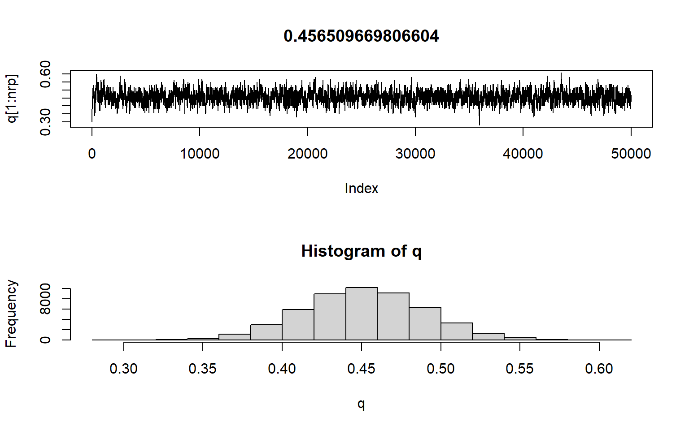

1-7章: MCMCの基本
1. 概要
- MCMCと統計モデリング
- MCMCの乱数生成の基本
- MCMCの利用方法
2. MCMCとは何か
- マルコフ連鎖モンテカルロ法（Markov Chain Monte Carlo）
- 乱数生成の手法としてマルコフ連鎖を使う
- 離散時間マルコフ連鎖: ある時点の値は1時点前の値\(\textbf{のみ}\)に依存
- モンテカルロ法：疑似乱数を使って何らかの性質を求める方法
- 確率的に変化するランダムな値の例↓ 平均m 分散vの正規分布（左）に従ってn個生成された乱数のヒストグラム（右）
★確率分布に従う乱数の例
layout(matrix(1:2, ncol=2))
m<-0
v<-1
n<-10000
x<-seq(m-sqrt(v)*4,m+sqrt(v)*4,0.01)
y<-(1/sqrt(2*pi*v))*exp(-(x-m)^2/(2*v))
plot(x,y,type='l')
rdata<-rnorm(n, m, sqrt(v))
hist(rdata, breaks=12)
3. MCMCと統計モデリングの関わり
- そもそも
- MCMC -> 単に乱数の生成方法の一つ
- ただし、事後分布（6章「データが得られた後に想定する分布」）に従う乱数の生成に使えるところが偉い。
- ベイズの定理に従って作られた（パラメータの）事後分布は複雑な場合が多い（＝パラメータに関して何らかの情報を得るのが難しい。前章のビールの例のようにパラメータ\(\beta_1\)の\(2.5%\)点の値はコレ、とか分かればいいけど、普通は分からない）
- なので、その分布に従う乱数を生成。乱数をもとに事後分布を作成。＝分布を評価するのではなく、分布に従って生成した値たちを評価＝対象が式じゃなくて値たちなら、点推定もできるし評価が簡単。
- ここで点推定が出てきて個人的にはちょっと混乱した（パラメータの点推定はしないんじゃないの？）けど、生成した確率分布の代表値を点推定で出すことは普通にあるということっぽいです。
- ここで発表はちょっと脇道に逸れます。ここからしばらくは頻度主義（求めたいパラメータは真の値を持つ、という考え方の統計）の例ですが、緑本から：MCMCを理解するための補足説明
4. モンテカルロ法
- 乱数を利用した計算法（緑本, P177）
- 乱数を生成する手法（馬場本）
- 乱数生成する方法はたくさんあるけど、事後分布に従う乱数を発生できるのがMCMCということ
5. モンテカルロ積分
- 第6章「事後分布の期待値を出すためには、その確率密度関数を積分しなきゃいけないけど、すごく大変」
- ここではそれをどう回避しているかを説明
- 事後分布のパラメータ\(\theta\)の期待値を知りたいとき、事後分布に従う乱数\(\hat{\theta}\)が十分な数（例えば1000個）生成されるなら、\(\theta\)の期待値は\(\frac{\Sigma^{1000}_{i=1} \hat{\theta}}{1000}\)。つまり乱数\(\hat{\theta}\)の平均値。ということで積分計算が不要になる。
6. マルコフ連鎖
- 時点によって変化していく確率変数
- 遷移核：1時点前の値を所与としたと条件付き確率
- スマホの例
- ある時点でスマホユーザーがとる選択は
- 同じ会社のものを使い続ける
- 別な会社のものに乗り換える
- ある時点\(t\)で、どの会社のスマホを使ってるかは、それまで使っていたスマホ会社を所与とした条件つき確率
- このとき遷移核
- A社だった人がA社：\(P(X_t=A社|X_{t-i}=A社)=0.4\)
- A社だった人がB社：\(P(X_t=B社|X_{t-i}=A社)=0.6\)
- B社だった人がB社：\(P(X_t=B社|X_{t-i}=B社)=0.1\)
- B社だった人がA社：\(P(X_t=A社|X_{t-i}=B社)=0.9\)
7. 定常分布
- さっきのスマホの例だと、最終的にA社が多くなって落ち着きそう -> A社60%で落ち着くらしい
- やってみよう
★スマホユーザーの例
# a地域とb地域では初期比が異なるけど、遷移核が同じならそのうち同じ値に収束するという例
na<-1 # a地域人数
nb<-1 # b地域人数
aAi<-0.9 # a地域におけるA社初期比
aBi<-1-aAi # a地域におけるA社初期比
bAi<-0.2 # b地域のA社初期比
bBi<-1-bAi # b地域のB社初期比
nrp<-30 # 繰り返し数
rAA<-0.4 # 以下の4行は遷移核
rAB<-0.6
rBB<-0.1
rBA<-0.9
naA<-numeric(nrp)
naB<-numeric(nrp)
nbA<-numeric(nrp)
nbB<-numeric(nrp)
naA[1]<-na*aAi
naB[1]<-na*aBi
nbA[1]<-nb*bAi
nbB[1]<-nb*bBi
for(rp in 2:nrp){
naA[rp]<-naA[rp-1]*rAA+naB[rp-1]*rBA
naB[rp]<-naA[rp-1]*rAB+naB[rp-1]*rBB
nbA[rp]<-nbA[rp-1]*rAA+nbB[rp-1]*rBA
nbB[rp]<-nbA[rp-1]*rAB+nbB[rp-1]*rBB
}
layout(matrix(1:2, ncol=2))
plot(naA, type='l',col='red',ylim=c(0,1.0))
par(new=T)
plot(naB, type='l',col='blue',xlab='',ylab='',ylim=c(0,1.0))
plot(nbA, type='l',col='red',ylim=c(0,1.0))
par(new=T)
plot(nbB, type='l',col='blue',xlab='',ylab='',ylim=c(0,1.0))
8. MCMCが目指すこと
- このようなユーザーからダンラムに選んで調査をすればきっと6:4になるだろう、と推測できる
- 遷移核を適切に決めることができれば、「何か」に従う乱数の生成が可能
- 遷移核をどう適切に決めるか。
9. メトロポリス・ヘイスティングス法（MH法）
- 乱数生成アルゴリズムの一つ。
- ここではランダムウォークMH法
- MH法のアルゴリズム
- この例での変数の使い方
- パラメータ\(\theta\)の分布を生成
- t番目の乱数: \(\hat{\theta_t}\)
- 初期値: \(\hat{\theta_1}\)
- 事後分布: \(f(\theta|D)\)
- データ\(D\)が得られたという条件のもとで、\(\theta\)が取りうる値の確率分布
- 事前分布: \(f(\theta)\)
- 情報がない状態での\(\theta\)の確率分布
- 尤度関数: \(f(D|\theta)\)
- \(\theta\)がある確率分布に従うという条件のもとでデータ\(D\)が得られることの尤もらしさ
- カーネル: \(Kernel(\theta)\)
- \(f(\theta|D)\propto f(D|\theta)f(\theta)=Kernel(\theta)\)
- 事後分布=尤度x事前分布\(\propto\)カーネル
- 手順
- 連続一様分布などに従ってランダムに初期値を決める
- 平均\(0\), 分散\(\sigma\)の正規分布に従う乱数を生成, \(\hat{\theta}_2^{提案}=\hat{\theta}_1+乱数\)
- \(f(\theta_1|D)\)と\(f(\theta_2^{提案}|D)\)の比を算出(\(rate\))。ただし\(rate=\frac{f(\hat{\theta}_2^{提案}|D)}{f(\hat{\theta}_1|D)}=\frac{Kernel(\hat{\theta}_2^{提案})}{Kernel(\hat{\theta_1})}\)
- ここ、本には「事後分布のカーネルがすでに得られているから、カーネルの比を取る的な書き方がされているけど、おそらく話としては、それぞれの\(\theta\)のときの確率の比を取る（それには事後分布の確率密度関数が使える）というのが筋。確率が高ければ提案を採用するという話なので。そのとき、事後分布のままだと分母の正規化定数が邪魔なんだけど、定数だからそれを消したカーネルの比でOKですよ、ということだと思う。
- \(rate\)が1より大きければ提案を採用、1より小さくても\(rate\)の確率で採用。
- 緑本のメトロポリス法との違い
- 乱数生成が確率1/2から正規分布に従う乱数になった、だけ?
- この例での変数の使い方
10. MH法の計算例
- 6-10の5つの売り上げデータの例
- やってみよう!
★メトロポリス・ヘイスティングス法の実装例
layout(matrix(1:2, ncol=2))
nrp<-2000
data<-c(2.4,3.2,2.2,4.6,3.3)
m<-0
v<-1
chain<-4
#knl<-numeric(nrp)
#theta<-numeric(nrp)
knl<-matrix(0,nrow=nrp, ncol=chain)
theta<-matrix(0,nrow=nrp,ncol=chain)
ratio<-1
for (nc in 1:chain){
theta[1, nc]<-runif(1,min=-2,max=2) # -2から2の連続一様分布に従う乱数
for (rp in 1:nrp){
kp<-numeric(length(data))
for (d in 1:length(data)){
kp[d]<-exp(-((data[d]-theta[rp,nc])^2)/2)/sqrt(2)*pi
}
knl[rp,nc]<-prod(kp)*exp(-(theta[rp,nc]^2/20000))/sqrt(20000*pi) #カーネルの計算
if (rp>1){
lr<-knl[rp,nc]/knl[rp-1,nc] # カーネル比（rate）の算出
if (runif(1)>lr){ # 確率rateで提案thetaを採用
#print(lr)
theta[rp,nc]<-theta[rp-1,nc]
knl[rp,nc]<-knl[rp-1,nc]
}
}
if (rp<nrp){
theta[rp+1,nc]<-theta[rp,nc]+rnorm(1,m,v) # 次のthetaの生成, 平均m, 分散vの正規分布に従う乱数を前のthetaにたす
}
}
}
for (wf in 1:chain){
if (wf>1){
par(new=T)
plot(theta[1:nrp,wf],type='l', xlab='',ylab='', col=wf, ylim=(c(min(theta),max(theta))))
}else{
plot(theta[1:nrp,wf],type='l', main=mean(theta), col=wf, ylim=(c(min(theta),max(theta))))
}
}
par(new=F)
for (wf in 1:chain){
if (wf>1){
hist(theta[,wf], col=adjustcolor(wf, alpha.f=0.3), add=TRUE, breaks=seq(floor(min(theta)),ceiling(max(theta)),0.5))
}else{
hist(theta[,wf], col=adjustcolor(wf, alpha.f=0.3), breaks=seq(floor(min(theta)),ceiling(max(theta)),0.5))
}
}
11. MH法の欠点
- 乱数生成のときの分散をどう決めるか
- 大きすぎると提案値が大きくなることが増え、いいところに行きにくい
- 小さすぎるとなかなか変化しなくていいところに行きにくい＝受容率が低い
12. ハミルトニアン・モンテカルロ法（HMC法）
- MH法の欠点を改善
- 受容率をあげつつ、パラメータの変化を大きく保つ
- 提案値をランダムではなく、確率密度の高い領域から選ぶ
- アルゴリズムの質的説明はP.72。stanにはNUTSというHMC法が実装されてるらしい
13. 乱数の取り扱いの注意点
- 各種設定：乱数をいくつ生成するかなど
- 収束の評価：生成された値をどう評価するか
- 乱数の代表値を求める
14. 繰り返し数(iter)の設定
- 乱数の個数。MH法の例ではiter=2000。メトロポリス法ではiter=100000だった。
- stanでは2000が設定されることが多い
15. バーンイン期間(warmup)の設定
- 初期値に依存するので最初の方はあやしい
- 切り捨てて使わない
16. 間引き(thin)の設定
- 生成した乱数を間引く
- 乱数間の自己相関を下げるための工夫
17. チェーン(chains)の設定
- 収束評価のため、乱数生成を何度か繰り返す
- 代表値を比較などして評価
- chains=4を使うことが多い
18. 収束の判定
- 良く使われる判定指標：\(\hat{R}\)
- \(\hat{R}=\frac{同一のチェーン内での乱数の分散の平均値}{異なるチェーンも含めたすべての乱数の分散}\)
- これが1.1より小さくなるまで繰り返す
- chans=1の場合、チェーン内をいくつかに分割して計算
19. 点推定と区間推定
- 点推定：推定値を1点だけ提示->MED, EAP, MAPは点推定
- 区間推定：なんらかの区間を設定して、幅のある推定値を提示
20. ベイズ信用区間
- 乱数を小さい値から並べて2.5%点から97.5%点に該当する範囲
- 95%ベイズ信用区間 / 95%ベイズ信頼区間
21. 事後中央値(MED; posteriori median)
- 事後分布の中央値を採用
22. 事後期待値(EAP; expected a posteriori)
- 事後分布の平均値を採用
23. 事後確率最大値(MAP; maximum a posteriori)
- 事後分布において確率が最大となる点
1-7の補足: 緑本のMCMC
- 緑本 P.171 例題：種子の生存確率
- 観測データ：\(N_i個\)の観察種子のうち、生きていて発芽能力があるものは\(y_i個\)、死んだ種子は\(N-y_i個\)」
- \(N_i\)を\(8\)とし、\(20\)個体について調べる（8個の観察種子のうち、生きてるものは\(y_i\)個、死んでるものは\(8-y_i\)個。これを20本の植物について調べる）
- \(\{y_1,y_2,...,y_{20}\}=\{4,3,4,5,5,2,3,1,4,0,1,5,5,6,5,4,4,5,3,4\}\)
- このとき、種子個体iの生存確率qは?
- ある個体\(i\)の生存種子数が\(y_i\)である確率（ヒストグラム（下図左）を見ると過分散ではないので、二項分布(リンク先はq=0.3の例)と考える＝統計モデル、ただしパラメータqは不明なので、データからそれを求めたい）：\(p(y_i|q)={}_8 C_{y_1} \cdot q^{y_1} \cdot(1-q)^{8-{y_1}}\)
- 過分散：通常の（二項）分布よりも分散が大きいこと。サンプルごとに傾向に違いがあるような場合に見られる。
- 尤度関数：\(L(q)=\prod_i p(y_i|q)\)（パラメータqのときデータ\(y_i\)が得られる確率の総乗） :パラメータq。qが変化すると尤度（モデルのもっともらしさ）が変化する。→尤度が最大になるqを求めればいい。これが真の値の推定値（頻度主義だから真の値がある）\(\hat{q}\)（qハット）=最尤推定量
- 対数尤度関数：\(logL(q) = \Sigma_i\{y_ilog\ q+(8-y_i)\ log(1-q)\}+定数\)（下図右）
- さらに脱線。尤度の説明もう一度。
- 緑本2.4節
- 尤度：あてはまりの良さ
- \(\lambda=3.56\)のポアソン分布に従う\(y_i\)が\(\{y_1,y_2,y_3\}=\{2,2,4\}\)であるときの尤度は\(p(y_1=2|\lambda=3.56)=0.180\), \(p(y_2=2|\lambda=3.56)=0.180\) \(p(y_3=4|\lambda=3.56)=0.190\)より、\(0.180\times0.180\times0.190=0.006156\)となる
- 一般化すると尤度\(L(\lambda)=\prod_{i}^{}p(yi|\lambda)=\prod_{i}\frac{\lambda^{y_i} exp(-\lambda)}{y_i!}\): 尤度は平均\(\lambda\)のポアソン分布における\(y_i\)の確率の総乗として表される
- 尤度関数を対数変換したとき、その値が最も大きい（＝0に近い）とき最も尤度が大きい（＝あてはまりがいい）
- 対数尤度関数の傾きが0になるqを探す（緑本2.4節参照）＝対数尤度関数を偏微分する
- 対数尤度関数をqで偏微分：\(\frac{\partial\ logL(q)}{\partial\ q} = \Sigma\{\frac{y_i}{q} - \frac{8-y_i}{1-q}\} = 0\) ? （全く自信ない）で、ここから\(\hat{q}=\frac{\Sigma{y_i}}{8\times20} = \frac{73}{8\times20}=0.45625\)になるらしい（https://hazm.at/mox/math/statistics/inferential/binomial-distribution.html）
- これで解析的に最尤推定値\(\hat{q}\)を求めることができた!
- 下の対数尤度関数のピークとなるところの\(q\)の値ということ。
★緑本の 「種子の例」のヒストグラムと対数尤度関数
layout(matrix(1:2, ncol=2))
data<-c(4,3,4,5,5,2,3,1,4,0,1,5,5,6,5,4,4,5,3,4)
hist(data,breaks=c(-1:7))
logb<-function(x) sum(log(dbinom(data, 8, x)))
q <- seq(0.2, 0.7, 0.01)
plot(q, sapply(q, logb), type='l')
- ここまでで、解析的に最尤推定量\(\hat{q}\)を求めることができたけど、それができない場合はどうするか。分布がややこしかったりすると尤度関数はもっとややこしくて解けなくなることがある。
- ここで、モンテカルロ法的なものが登場
- ふらふら試行錯誤による最尤推定（という例；緑本P173）
- qを離散化→qを連続値ではなく0.01刻みの離散値と考える
- 適当なqの初期値を決め、対数尤度を計算して評価。対数尤度関数に代入するだけ。パラメータはqだけだから計算可能。\(q=0.30\)の場合、\(-46.38\)になる。
- 以下は「ふらふら試行錯誤の最尤推定」手順
- qはとなりの値にしか変化できない（ここで「となりの値」という考え方をするために、qを離散化したのだと思う）->0.30スタートなら0.29か0.31
- 2つの値のうちどちらを選ぶかはランダムに決定し、対数尤度が現在よりも大きければそちらに移動
- 0.31が選ばれた場合、対数尤度は-45.24となり、大きいから採用される -> qは0.31になる
- 仮に0.29が選ばれていれば、対数尤度は-47.62で小さくなってるので、qは0.30に戻る
- 下、適当に実装してみた例。qの初期値(qi)の値を変えても同じ値に収束するのがわかる。
- 緑本ではqを0.01刻みで動かしてるけど、下では0.001刻みにしている。緑本の例のように100回では収束せず400回くらいかかってるけど、当然収束した値は、より真の値に近づく。
★ふらふら最尤推定
nrp<-1000
qi<-0.159
n<-8
data<-c(4,3,4,5,5,2,3,1,4,0,1,5,5,6,5,4,4,5,3,4)
logL<-numeric(nrp)
q<-numeric(nrp)
q[1]<-qi
for (rp in 1:nrp){
lh<-numeric(length(data))
for (d in 1:length(data)){
lh[d]<-choose(n,data[d])*q[rp]^data[d]*(1-q[rp])^(n-data[d])
}
logL[rp]<-log(prod(lh))
if (rp>1){
if (logL[rp]<logL[rp-1]){
q[rp]<-q[rp-1]
logL[rp]<-logL[rp-1]
}
}
if (round(runif(1))){
q[rp+1]<-q[rp]+0.001
}else{
q[rp+1]<-q[rp]-0.001
}
}
plot(q[1:nrp],type='l', main=q[nrp])
- このように、ランダムに生成した値を仮のqとして尤度を計算、尤度が高くなる場合だけ値を変化させるという方法で最尤値を推定することができた。緑本に書いてるように、ここまでのアルゴリズムは分かりやすさだけを考えた非効率なもの。実際の最尤推定はもっと効率いいそうです。
- これがモンテカルロ法（の一例）。
- メトロポリス法（MCMCアルゴリズムの一つ）
- ふらふら試行錯誤をちょっと修正
- \(q\)の初期値を決める(\(q_i\))
- \(q\)を増やすか減らすかをランダムに決め、新しい値を作る(\(q^新\)とする)
- 尤度を計算。大きくなってたら\(q^新\)を採用する
- — ここまではふらふら試行錯誤と同じ —
- 尤度が小さくなる場合でも、確率\(r\)で\(q^新\)を採用して\(q\)を\(q^新\)に変更。そのときの確率は\(r=\frac{L(q^新)}{L(q)}\)で計算する。尤度が高いほど採用される確率が高まる。手順3のように尤度が高くなっていれば確率が1より大きいから、必ず採用される。
- じゃあ実装してみよう。繰り返し回数(nrp)によってqの平均値は変わってくる。まずは10万回の例。
★メトロポリス法の実装例
layout(matrix(1:2, ncol=1))
nrp<-50000
qi<-0.30
n<-8
data<-c(4,3,4,5,5,2,3,1,4,0,1,5,5,6,5,4,4,5,3,4)
logL<-numeric(nrp)
q<-numeric(nrp)
q[1]<-qi
lr<-1
for (rp in 1:nrp){
lh<-numeric(length(data))
for (d in 1:length(data)){
lh[d]<-choose(n,data[d])*q[rp]^data[d]*(1-q[rp])^(n-data[d])
}
logL[rp]<-log(prod(lh))
if (rp>1){
lr<-exp(logL[rp]-logL[rp-1])
if (runif(1)>lr){
#print(lr)
q[rp]<-q[rp-1]
logL[rp]<-logL[rp-1]
}
}
if (round(runif(1))){
q[rp+1]<-min(0.99,q[rp]+0.01)
}else{
q[rp+1]<-max(0.01,q[rp]-0.01)
}
}
plot(q[1:nrp],type='l', main=mean(q))
hist(q)
- とりあえず緑本の感じにはなってるので実装例は良さそう。下図は生成したqのヒストグラム。
- MCMCは一意の最尤値に収束するのではなく、変化する値の生成を行う。ただし、だんだんと収束していくことには変わりはない。
- 定常分布
- 上のようなマルコフ連鎖によって生成した変数\(q\)を考えたとき、
- マルコフ連鎖が「一定の条件」1を満たしているとき、\(q\)は定常分布(\(p(q|y_i)\))という確率分布に従う
- そのため、十分な回数生成した変数の分布は定常分布に近似してくれる（上図下。ただし、上図では定常分布は書いてない。緑本p179参照。回数が少ないと定常分布から離れたヒストグラムになる。）
- 定常分布：\(p(q|y_i)=\frac{L(q)}{\Sigma_q L(q)} \propto L(q)\)
- ここまでの流れ
- 二項分布というモデルとメトロポリス法によって\(q\)をたくさん生成すると、それは定常分布に近似する。
- この例題では、定常分布は尤度に比例する
- 定常分布は、あるデータに統計モデルを当てはめたときに\(q\)がとる値の確率分布と解釈できる（緑本p184）←ただし、ここの理屈はちょっと自身がない
- 二項分布というモデルとメトロポリス法によって\(q\)をたくさん生成すると、それは定常分布に近似する。
- 上のようなマルコフ連鎖によって生成した変数\(q\)を考えたとき、
- ベイズへ
- さっきの式の右辺に事前分布をかけると、ベイズのカーネル（6章で出てきた \((D|\theta)\cdot f(\theta)\), あるいは \([\Pi^5_{i=1}\frac{1}{\sqrt{2\pi}}exp(-\frac{(x_i-\theta)^2}{2})]\cdot[\frac{1}{\sqrt{20000\pi}}exp(-\frac{\theta^2}{20000})]\)(5つの売り上げデータをとるやつ)
- さっきまでやってた例が、そもそもベイズの枠組みとして考えられていたら…
- 植物の個体のうち生存しているものはいくつあるか
- 事前分布をおく
- 個数はパラメータ\(q\)に従う二項分布と考え、20個体のデータから事後分布を作る。
- この事後分布は事前分布に尤度をかけたもの。事前分布はパラメータ\(q\)（馬場本の例だと\(\theta\)）の関数だけど、まあ一様分布を使ったりするし、ということで定数だとすると、事後分布＝定常分布ということになる
- ここまでの流れによって、MCMCで得られる定常分布はベイズモデリングの事後分布であると言えることになる
- もとの場所に戻る